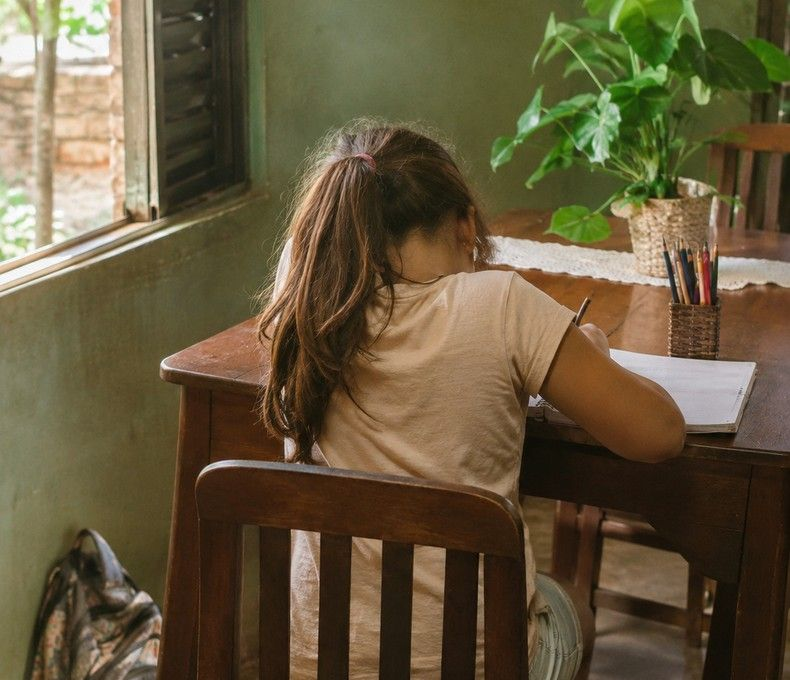
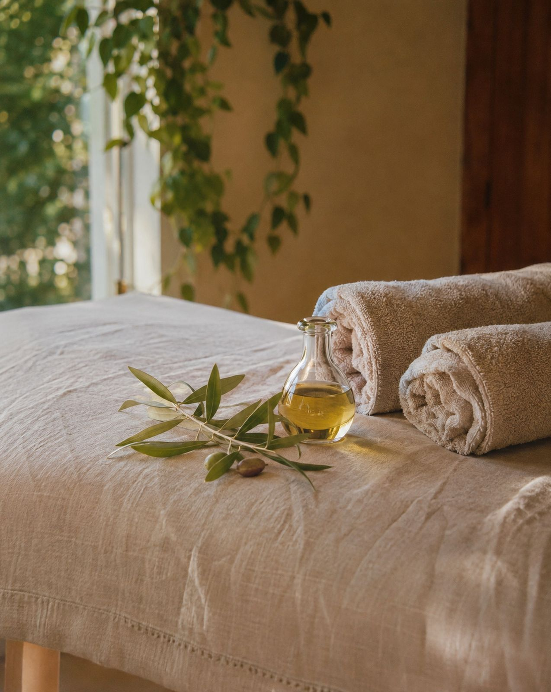
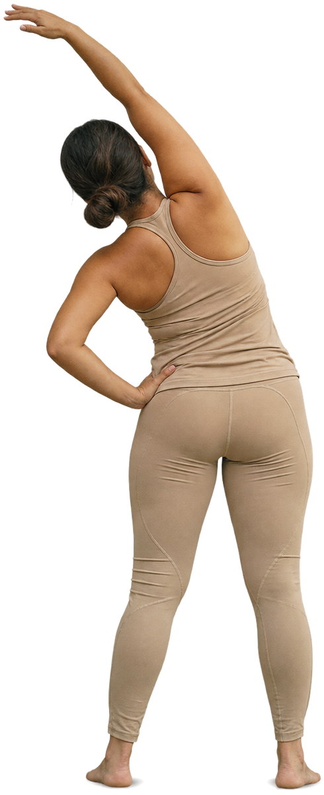
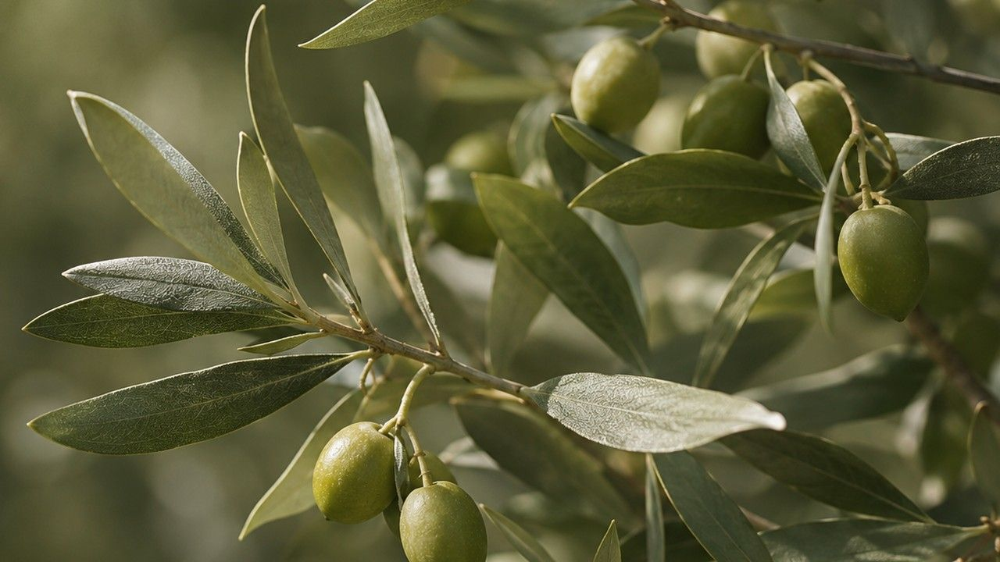
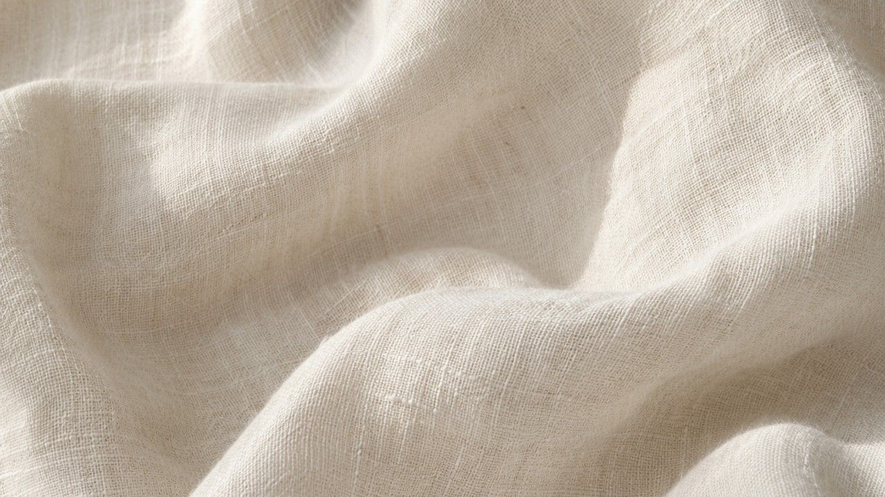
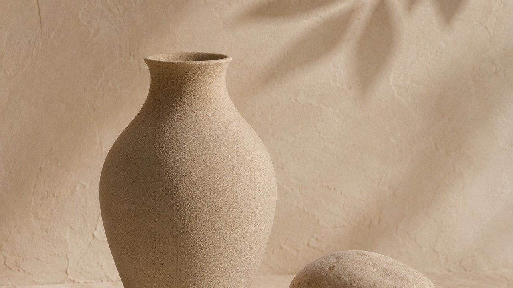
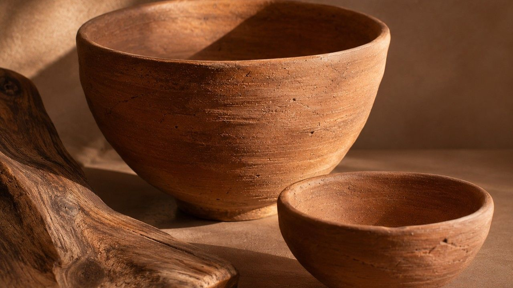
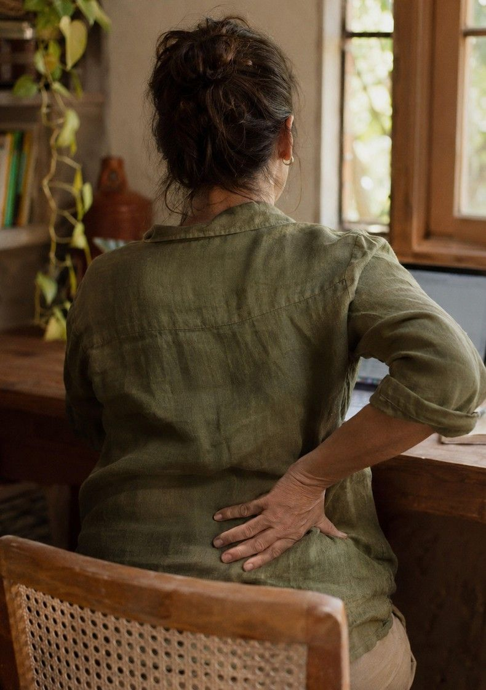
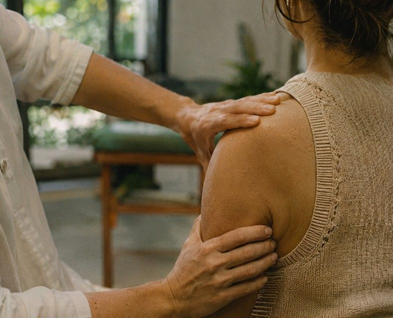
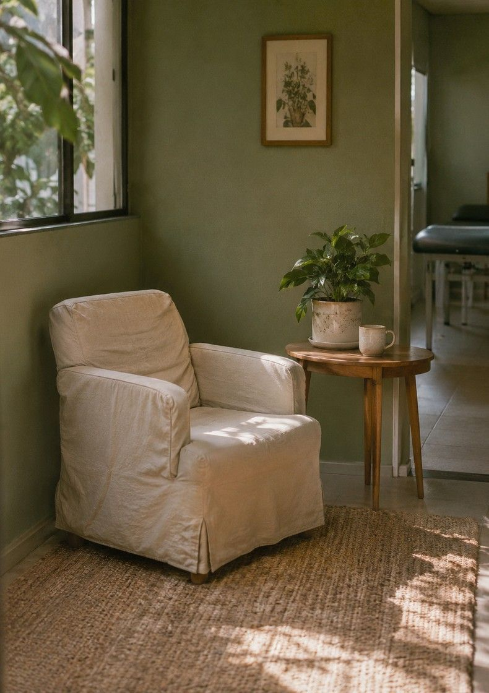

Carrossel · 1 por mês
Mãe, repare
Para as mães perceberem cedo a hora de procurar ajuda.
Dalila, a sua marca nasce do seu jeito de trabalhar: ouvir primeiro, avaliar com método e acompanhar de perto. A identidade visual traduz isso em calma, elegância e confiança.

“Eu trato a coluna com ciência, mas começo escutando você.”

A sua marca fala de gente em movimento. Por isso o monograma abre espaço para a pessoa ficar no meio dele.

Querem segurança e alguém que explique cada passo com calma.
Querem voltar a se mover bem, com um plano feito para elas.
Quem chega precisa se sentir seguro.
Avaliação, método e acompanhamento.
Uma marca calma, que respira.
A haste e o arco, que acolhe e protege.
Uma haste firme, que lembra uma coluna alinhada.
Duas mãos que apoiam o broto: acolhimento e delicadeza.
São duas mãos que, juntas, apoiam o broto. O símbolo reforça o acolhimento e a delicadeza do seu cuidado. Ele aparece sempre inteiro, em selos, etiquetas, padrões e detalhes.
A flor é um elemento só: as mãos e o broto aparecem sempre juntos.




O seu nome e os títulos.
Aa Bb Cc 123
Textos e informações.
FISIOTERAPEUTA
As próximas imagens são simulações, para a gente sentir a marca no dia a dia. Cada peça ainda será desenhada de verdade.

Para as mães perceberem cedo a hora de procurar ajuda.

Vídeos curtos que mostram o seu conhecimento.
Como funciona o tratamento, da avaliação ao plano.


O seu dia a dia no consultório.
Cuidado que alinha.